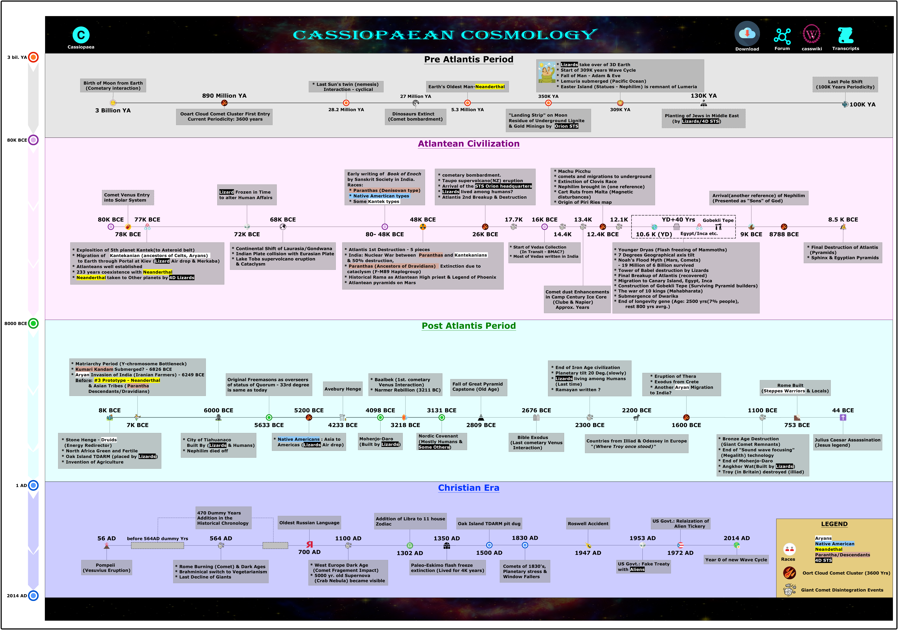

Group 1
* Lizards take over of 3D Earth
* Start of 309K years Wave Cycle
* Fall of Man - Adam & Eve
* Lemuria submerged (Pacific Ocean)<
* Easter Island (Statues - Nephilim) is remnant of Lumeria
Dinosaurs Extinct
(Comet bombardment)
100K YA
130K YA
27 Million YA
3 Billion YA
309K YA
5.3 Million YA
890 Million YA
Birth of Moon from Earth
(Cometary interaction)
Ooart Cloud Comet Cluster First Entry
Current Periodicity: 3600 years
Earth's Oldest Man-Neanderthal
Last Pole Shift
(100K Years Periodicity)
Planting of Jews in Middle East
(by Lizards/4D STS)
28.2 Million YA
* Last Sun's twin (nemesis)
Interaction - cyclical
"Landing Strip" on Moon
Residue of Underground Lignite
& Gold Minings by Orion STS
350K YA
10K BCE Period
* Continental Shift of Laurasia/Gondwana
* Indian Plate collision with Eurasian Plate
* Lake Toba supervolcano eruption
& Cataclysm
* Machu Picchu
* comets and migrations to underground
* Extinction of Clovis Race
* Nephilim brought in (one reference)
* Cart Ruts from Malta (Magnetic
disturbances)
* Origin of Piri Ries map
* Younger Dryas (Flash freezing of Mammoths)
* 7 Degrees Geographical axis tilt
* Noah's Flood Myth (Mars, Comets)
- 19 Million of 6 Billion survived
* Tower of Babel destruction by Lizards
* Final Breakup of Atlantis (recovered)
* Migration to Canary Island, Egypt, Inca
* Construction of Gobekli Tepe (Surviving Pyramid builders)
* The war of 10 kings (Mahabharata)
* Submergence of Dwarika
* End of longevity gene (Age: 2500 yrs(7% people),
rest 800 yrs avrg.)
* cometary bombardment.
* Taupo supervolcano(NZ) eruption
* Arrival of the STS Orion headquarters
* Lizards lived among humans?
* Atlantis 2nd Breakup & Destruction
* Atlantis 1st Destruction - 5 pieces
* India: Nuclear War between Paranthas and Kantekanians
& 50% destruction,
* Paranthas (Ancestors of Dravidians) Extinction due to
cataclysm (F-M89 Haplogroup)
* Historical Rama as Atlantean High priest & Legend of Phoenix
* Atlantean pyramids on Mars
Egypt/Inca etc.
YD+40 Yrs
10.6 K (YD)
12.4K BCE
16K BCE
26K BCE
48K BCE
68K BCE
72K BCE
78K BCE
77K BCE
8.5 K BCE
80- 48K BCE
80K BCE
8788 BCE
9K BCE
Comet Venus Entry
into Solar System
Early writing of Book of Enoch
by Sanskrit Society in India.
Races:
* Paranthas (Denisovan type)
* Native Amertican types
* Some Kantek types
* Final Destruction of Atlantis
(Pyramids)
* Sphinx & Egyptian Pyramids
Arrival(another reference) of Nephilim
(Presented as "Sons" of God)
Lizard Frozen in Time
to alter Human Affairs
* Start of Vedas Collection
(In Transit - BMAC?)
* Most of Vedas written in India
* Explosition of 5th planet Kantek(to Asteroid belt)
* Migration of Kantekanian (ancestors of Celts, Aryans)
to Earth through Portal at Kiev (Lizard Air drop & Merkaba)
* Atlanteans well established
* 233 years coexistence with Neanderthal
* Neanderthal taken to Other planets by 4D Lizards
17.7K
14.4K
12.1K
13.4K
Comet dust Enhancements
in Camp Century Ice Core
(Clube & Napier)
Approx. Years
* Baalbek (1st. cometary
Venus Interaction)
* Narmer Rebillion (3211 BC)
Mohenjo-Daro
(Built by Lizards)
Nordic Covenant
(Mostly Humans &
Some Others)
* Bronze Age Destruction
(Giant Comet Remnants)
* End of "Sound wave focusing"
(Megalith) technology
* End of Mohenjo-Daro
* Angkhor Wat(Built by Lizards)
* Troy (in Britain) destroyed (illiad)